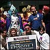

Story Highlights
{kind=link}

"Attention everyone: The Martians have landed."
With that announcement from NYLine Coordinator Robert Cartagena, a swarm of aliens appeared from Mars 2112 (51st & Broadway) to deliver good will, T- shirts and lunch to the Menacing New Yorkers. Green and blue-faced aliens distributed human sustanance to line members nearing the end of their first official shift.
After lunch, Robert gave away Mars 2112 caps and shirts to the crowd by asking questions from the "Star Wars" Trivial Pursuit game. Beating everybody to the draw was Jimmy the Driver from the Rosie O'Donnell Show, who surprised his coworkers and impressed even the most fanatical of fans with his knowledge of the most minute Star Wars facts.
The presence of the line on West 54th Street has caused other astral visitors to drift by. People with a quick eye tuned to the webcam might have seen filmmaker Spike Lee, who broke stride for a few moments to say "hello" to the camera. And "Sister, Sister" stars Tia and Tamera Mowry stopped to chat with fans and the camera crew from E! Entertainment Television. Tia confirmed that she's a true fan, saying "I want to be there for the 12:01 a.m. show!"